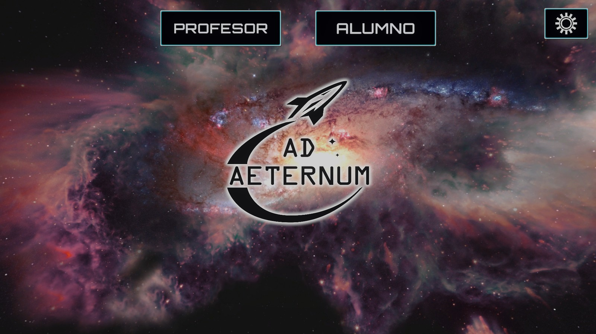
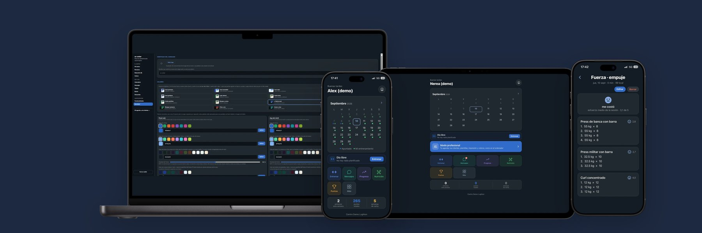
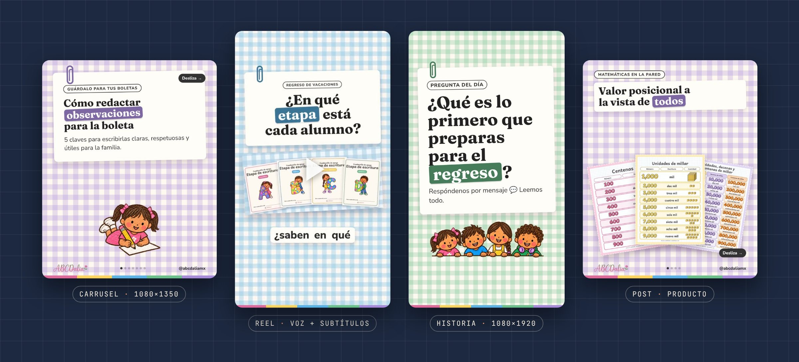
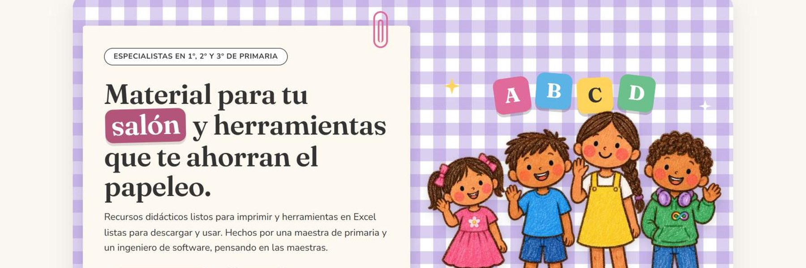
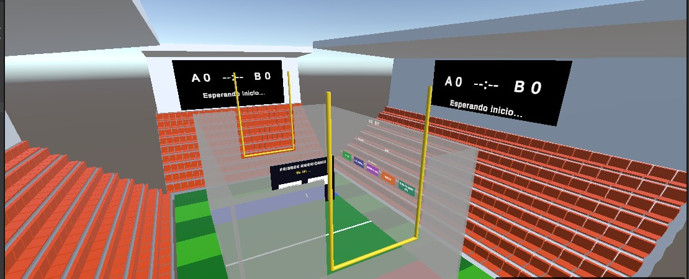
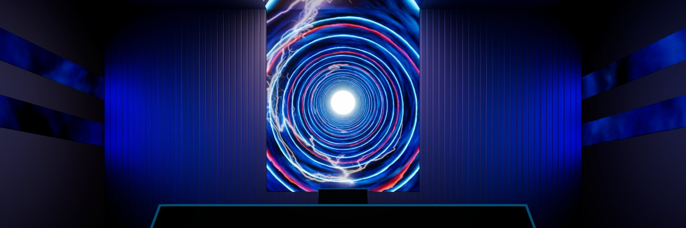
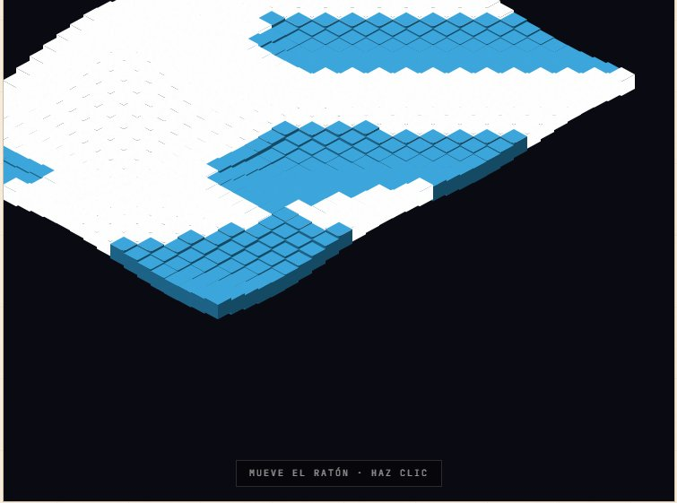
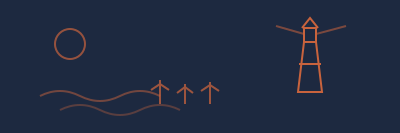
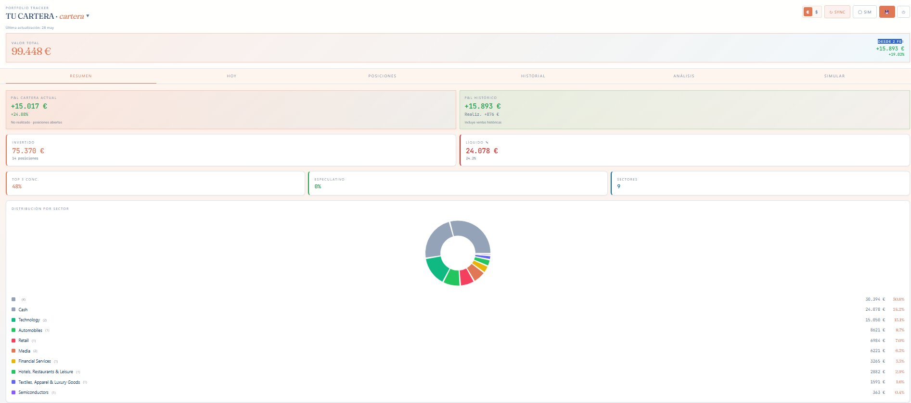
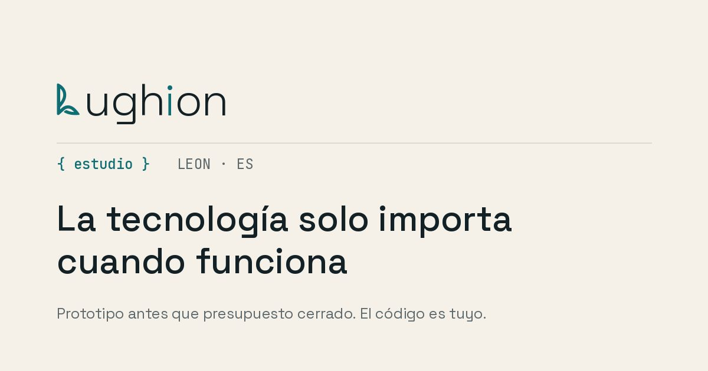

Game Designer
& AI-Powered Developer
Mario Fernández Martín.
Diseñador y desarrollador con base en León. Construyo videojuegos y productos digitales usando la IA como herramienta y aplicando criterio de diseño para garantizar la calidad.
Mario Fernández Martín.
Designer and developer based in León. I build video games and digital products using AI as a tool and applying design judgment to ensure quality.
Sobre míAbout me
Soy Mario, graduado en Diseño y Desarrollo de Videojuegos por la UNIR y estudiante del Máster en Ingeniería de Software. Combino la sensibilidad de diseño que da venir de los videojuegos con el desarrollo de producto real: apps móviles, paneles web y bases de datos que aguantan usuarios de verdad. I'm Mario, a graduate in Video Game Design & Development from UNIR and a Master's student in Software Engineering. I combine the design sensibility that comes from games with real product development: mobile apps, web panels and databases that hold up to real users.
Mi base es la de la carrera: C#, programación orientada a objetos y bases de datos, y he programado también en Python, Java y .NET. En mis proyectos uso además TypeScript, React Native, Next.js o PostgreSQL con desarrollo asistido por IA: la IA escribe el código, y yo decido, reviso y pruebo cada pieza. Y sigo diseñando con cabeza de game designer: mecánicas, sistemas y gamificación. My foundation comes from my degree: C#, object-oriented programming and databases, and I've also programmed in Python, Java and .NET. In my projects I also use TypeScript, React Native, Next.js or PostgreSQL with AI-assisted development: AI writes the code, and I decide, review and test every piece. And I still design with a game designer's head: mechanics, systems and gamification.
Mi proyecto principal es tailt, una plataforma de gestión para gimnasios publicada en la App Store, en prueba en Google Play y en uso en un centro de León. Además llevo la parte técnica de una tienda online de material didáctico, con un sistema de redes sociales con IA, y sigo con Ad Aeternum, el videojuego educativo de mi TFG (9,0), junto a profesores de la Asociación Arenales. My main project is tailt, a gym management platform live on the App Store, in testing on Google Play and in use at a centre in León. I also run the technical side of an online store of teaching materials, including an AI-run social media system, and I'm continuing Ad Aeternum, the educational video game from my final project (graded 9.0), with teachers from Asociación Arenales.
Proyectos seleccionadosSelected projects

Ad Aeternum
Mi Trabajo Fin de Grado. Videojuego educativo cooperativo-competitivo de temática espacial. Mecánicas de quiz por turnos, dos roles asimétricos (Tripulante / Almirante), mapa galáctico y sistema de combate académico. My Final Degree Project. A cooperative-competitive educational game with a space theme. Turn-based quiz mechanics, two asymmetric roles (Crewmember / Admiral), a galaxy map and an academic combat system.

tailt
Plataforma SaaS de gestión para gimnasios centrada en la retención de socios: entrenamiento y progresión, reservas, cobro de bonos, gamificación, calorías de las comidas por foto con IA y panel de administración. App móvil (React Native/Expo) + panel web (Next.js) sobre Supabase/PostgreSQL con RLS. Publicada en la App Store, en prueba cerrada en Google Play y en uso en un centro de León. A gym management SaaS platform focused on member retention: training and progression, bookings, session-pack payments, gamification, meal calories from a photo with AI and an admin panel. Mobile app (React Native/Expo) + web panel (Next.js) on Supabase/PostgreSQL with RLS. Live on the App Store, in closed testing on Google Play and in use at a centre in León.

Redes autogestionadasSelf-running socials
Sistema que lleva las redes sociales de un negocio casi solo: una IA prepara con un mes de margen carruseles, historias y reels con música, voz y subtítulos; el dueño los aprueba en un calendario dentro de su web, y la web los publica en Instagram, Facebook, TikTok y Pinterest. Generador propio (Python, Playwright, ffmpeg) y plugin de WordPress con funciones para la IA por MCP. En marcha en una tienda online real. A system that runs a business's social media almost on its own: an AI prepares carousels, stories and reels with music, voice-over and subtitles a month ahead; the owner approves them in a calendar inside their website, and the website publishes them to Instagram, Facebook, TikTok and Pinterest. Custom generator (Python, Playwright, ffmpeg) and a WordPress plugin exposing functions to the AI over MCP. Running on a real online store.

ABCdalia
Tienda online de material didáctico para primaria (1º a 3º), en producción: imprimibles para el salón y herramientas en Excel que ahorran papeleo a las maestras. Marca propia, tema y plugin en PHP, Excel generados con Python, pagos con Mercado Pago y un sistema de redes con IA. An online store of primary-school teaching materials (grades 1–3), in production: classroom printables and Excel tools that save teachers paperwork. Its own brand, a PHP theme and plugin, Excel files generated with Python, Mercado Pago payments and an AI-run social media system.

American Frisbee
Juego de VR multijugador para Location-Based Entertainment, desarrollado durante mis prácticas en Immersive Oasis. Fútbol americano con frisbee virtual: físicas aerodinámicas, multijugador en red local con tracking físico real y despliegue en PICO 4. Diseño de concepto y desarrollo en Unity. A multiplayer VR game for Location-Based Entertainment, built during my internship at Immersive Oasis. American football with a virtual frisbee: aerodynamic physics, local-network multiplayer with real physical tracking, and deployment on PICO 4. Concept design and development in Unity.
+ Otros proyectos+ Other projects

Pantallas de discotecaNightclub screens
Bucles de vídeo para las pantallas de una discoteca de León, hechos en Blender (con IA dentro de Blender) por capas que reaccionan a la música en directo, y una maqueta de la sala en Unity para revisarlos en Meta Quest 3 antes de entregarlos. Video loops for the screens of a nightclub in León, made in Blender (with AI inside Blender) in layers that react to live music, plus a Unity mock-up of the venue to review them on Meta Quest 3 before delivery.

AG Telecom
Header web interactivo para una empresa ficticia de telecomunicaciones. Un mar de cubos isométricos con física magnética, hechos con p5.js. Trabajo universitario llevado más allá con un dosier web completo. An interactive web header for a fictional telecom company. A sea of isometric cubes with magnetic physics, built with p5.js. A university assignment taken further into a complete web dossier.
Hunter Trade Center
App (Flutter + Firebase) de red social y trueque de permisos de caza entre cazadores: directorio, perfiles, chat en tiempo real y motor de coincidencias. Proyecto personal en solitario, en pausa. A Flutter + Firebase app: a social network and barter marketplace for hunters to trade hunting permits —directory, profiles, real-time chat and a matching engine. Solo personal project, on hold.

Finisterre
RPG de granja y vida sobre la España rural y su folclore: cultivos, oficios, pesca submarina de tesoros y "el pueblo revive". Hecho en Unity dirigiendo agentes de IA. A farming & life RPG about rural Spain and its folklore: crops, skills, underwater treasure diving and a village that revives. Built in Unity by directing AI agents.

Cartera Tracker
App web para seguimiento de carteras de inversión: acciones, ETFs, divisas y cripto, con precios en tiempo real y cálculo de P&L. HTML/JS + Firebase, desplegada en Cloudflare Pages con un Worker como proxy de APIs. A web app for tracking investment portfolios: stocks, ETFs, currencies and crypto, with real-time prices and P&L. HTML/JS + Firebase, deployed on Cloudflare Pages with a Worker as an API proxy.

Lughion
La web y la marca de Lughion, mi proyecto personal de desarrollo. Sitio estático sin framework, biblioteca de proyectos filtrable generada desde un JSON y despliegue continuo en Cloudflare Pages. The website and brand of Lughion, my personal development project. A framework-free static site, a filterable project library generated from JSON, and continuous deployment on Cloudflare Pages.
Habilidades técnicasTechnical skills
Domino: lo uso con soltura por mi cuenta · He programado / Uso: lo he trabajado en la carrera o en proyectos · Con IA: lo he usado en proyectos reales con desarrollo asistido por IA, revisando y probando lo que produce. Strong: I use it fluently on my own · Worked with / Working: used in my degree or projects · With AI: used in real projects with AI-assisted development, reviewing and testing what it produces.
LenguajesProgramming languages
- C# DominoStrong
- SQL DominoStrong
- Python He programadoWorked with
- Java He programadoWorked with
- .NET He programadoWorked with
- TypeScript Con IAWith AI
- JavaScript Con IAWith AI
Web & MóvilWeb & Mobile
- HTML / CSS UsoWorking
- WordPress / WooCommerce UsoWorking
- React Native + Expo Con IAWith AI
- Next.js / React Con IAWith AI
- PHP Con IAWith AI
- Flutter Con IAWith AI
Backend & DatosBackend & Data
- Bases de datos relacionalesRelational databases DominoStrong
- PostgreSQL · Supabase Con IAWith AI
- RLS y migracionesRLS & migrations Con IAWith AI
- Firebase Con IAWith AI
- Cloudflare Pages UsoWorking
FundamentosFoundations
- Programación orientada a objetosObject-oriented programming DominoStrong
- Estructuras de datos y algoritmosData structures & algorithms He programadoWorked with
- Ingeniería del softwareSoftware engineering He programadoWorked with
- Sistemas operativosOperating systems He programadoWorked with
Game Engines
- Unity DominoStrong
- Unreal Engine DominoStrong
- Netcode / VR (XR Toolkit) UsoWorking
- p5.js UsoWorking
Game Design
- Mecánicas y sistemasMechanics & systems DominoStrong
- GamificaciónGamification DominoStrong
- PrototipadoPrototyping DominoStrong
- Diseño de nivelesLevel design UsoWorking
- Narrativa interactivaInteractive narrative UsoWorking
Herramientas & IATools & AI
- IA aplicada · Claude / Claude CodeApplied AI · Claude / Claude Code DominoStrong
- Prompt Engineering (AWS) DominoStrong
- VS Code · Visual Studio DominoStrong
- Git / GitHub UsoWorking
- Playwright · ffmpeg Con IAWith AI
Arte, 3D & vídeoArt, 3D & video
- Photoshop DominoStrong
- Illustrator DominoStrong
- Blender (también con IA)Blender (also with AI) UsoWorking
- Maya UsoWorking
- Krita UsoWorking
- Reaper (audio)(audio) UsoWorking
IdiomasSpoken languages
- EspañolSpanish NativoNative
- InglésEnglish C1
- AlemánGerman A1
- JaponésJapanese BásicoBasic